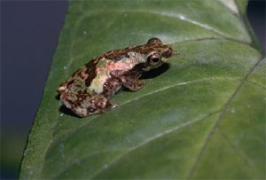

<body text="#000000" bgcolor="#FFFFFF" background="bg311.gif">

∆јЅј Ћј«јёўјя Ќќ„Ќјя (Nectophryne afra) из  амеруна, как и большинство других видов, имеет на пальцах диски дл€ прилипани€, позвол€ющие ей легко передвигатьс€ по листь€м деревьев и даже по вертикальным стекл€нным поверхност€м, кроме того, она искусный прыгун. »збегает солнца, но при достаточной влажности может попадатьс€ на глаза и днем. 